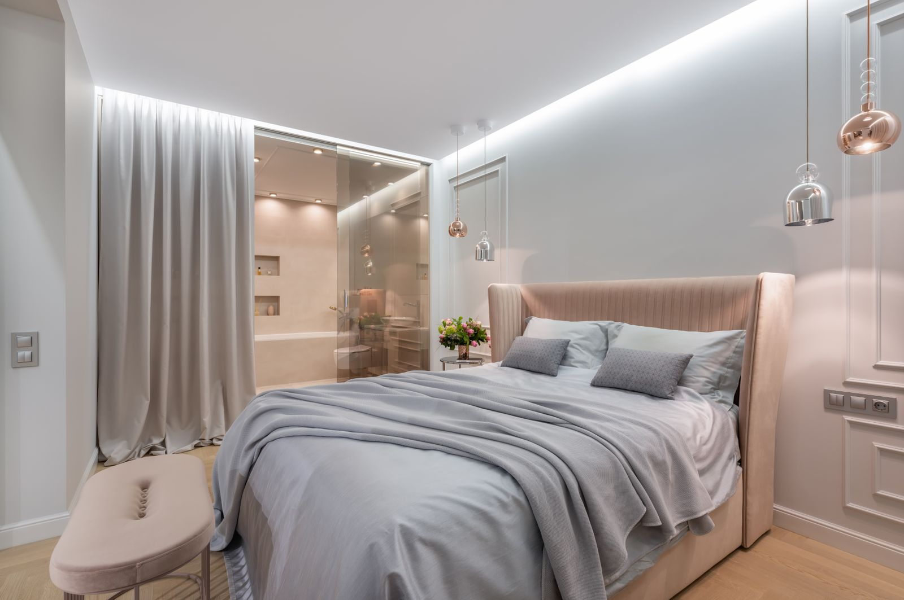

A Different Way to
Understand Sleep.
Understanding sleep is the beginning of better care. Rather than treating sleep disruption as an isolated complaint, our sleep physicians view nocturnal physiology as an essential biological narrative that demands rigorous investigation, unhurried listening, and biometric precision.
Listen Carefully
Giving nocturnal symptoms the unhurried attention they require.
Investigate Thoughtfully
Rigorous clinical evaluation tailored to individual physiology.
Explain Clearly
Translating complex diagnostics into transparent, actionable care.
We Start With Understanding.
Sleep medicine at SomnaClinic is defined by a disciplined, sequential approach designed to clarify complex sleep disorders and replace guesswork with evidence.
Unhurried Patient Intake
We begin by taking the time to listen carefully to your sleep history, nocturnal habits, schedule constraints, and daytime functional symptoms.
Objective Biometric Analysis
Using multi-channel overnight polysomnography and airway screening, we observe your nocturnal architecture, airflow dynamics, and oxygen saturation.
Transparent Translation
Our sleep physicians sit down with you to explain every telemetry channel, arousal index, and respiratory metric clearly, without confusing medical jargon.
Individualized Therapy
We design custom treatment pathways: precision CPAP calibration, cognitive insomnia behavioral therapy (CBT-I), or oral appliances, supported by longitudinal follow-up.
Sleep Deserves More Than a Quick Answer.
“Restorative sleep is not a luxury. It is an intricate neurobiological requirement that cannot be solved with superficial checklists or uniform sedative prescriptions.”
Every individual presents with a unique circadian phase, airway morphology, and neurological arousal threshold. When sleep quality degrades, daytime exhaustion is rarely an isolated problem—it is a physiological sign that nocturnal repair mechanisms are being repeatedly interrupted.
Our philosophy is rooted in diagnostic honesty. We believe in taking the time to conduct thorough clinical investigations, explaining objective data with transparency, and tailoring evidence-based therapies that respect your lifestyle and biological needs.
Diagnostics tailored around your specific nocturnal breathing and sleep architecture.
Ongoing clinical titration and progress checkpoints that adapt as your health improves.
Clear, Calm, Connected.
What you can expect from your clinical care experience at every stage of diagnostic evaluation and ongoing treatment.
Clear
Understanding what is being assessed and why. Every nocturnal test, telemetry reading, and therapy recommendation is explained in plain, transparent language so you always remain in control of your health.
Calm
A comfortable, stress-free environment for discussing sleep concerns. Private soundproof diagnostic suites, natural materials, and an attentive clinical staff dedicated to making sleep studies restful.
Connected
Continuity through follow-up and ongoing clinical care. Structured 30, 60, and 90-day progress checks, remote CPAP adherence monitoring, and ongoing communication with your primary care provider.
Begin With a Conversation.
Every sleep concern starts somewhere. A clear conversation can help you understand what to explore next.

Listen
Sharing your nocturnal habits, schedule constraints, and daytime functional symptoms without rush or clinical judgment.
Understand
Translating complex nocturnal telemetry, breathing parameters, and sleep stage architecture into clear, transparent health insights.
Guide
Formulating an evidence-based pathway—from personalized diagnostics to targeted therapy calibration—supported by longitudinal follow-up.
Clear questions lead to clearer next steps.